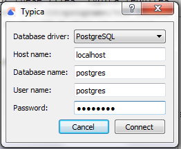

Database Connection Settings
If database connection settings have not been previously configured or if an attempt to connect to the database with the current settings fails, Typica will show the Database Connection Settings window when the program is opened.
Typica uses a database managed by PostgreSQL to store records relating to your coffee. It is possible to use a limited subset of functionality without a database, however much of the design of Typica assumes that a database is available.
This window requests five pieces of information.
- Database driver: Currently, only PostgreSQL is supported.
- Host name: If you are running PostgreSQL and Typica on the same computer, this should be localhost as seen in the above image. It is possible to install PostgreSQL on a different computer on your local network or on the Internet and configure it to accept connections from the computers where you will be using Typica. In that case the host name might be an IP address (example: 192.168.1.50) or a domain name (example: typica.example.com).
- Database name: PostgreSQL can manage multiple databases and each one has a name. PostgreSQL installers typically create a database named postgres. Typica can use this, however it is recommended to create a new database for Typica to use.
- User name: PostgreSQL database user names are distinct from system user names. PostgreSQL installers typically create a user called postgres. While Typica can use that user name, it is recommended to create at least one new user. If you create a new user, you will need to ensure that it has the necessary permissions on the database you will be using.
- Password: If you are using the user name postgres created by a PostgreSQL installer, you will have been asked to produce a password during installation. The password you chose will be the password to enter here. If you have created a new user, this will be the password associated with that user.
Once all of this information has been entered, you can click the "Connect" button. Typica will close this window and attempt to connect to the database using the specified information. If this connection attempt fails, the window will reappear so you can verify the connection information, ensure that the database is accessible, and try again.
If you do not wish to use a database, you can click the "Cancel" button. Note that if you do not connect to a database, Typica will bring this window up again the next time you start the program.
What Happens Next?
After Typica has connected to the database or you have pressed "Cancel" Typica will bring up one of two windows.